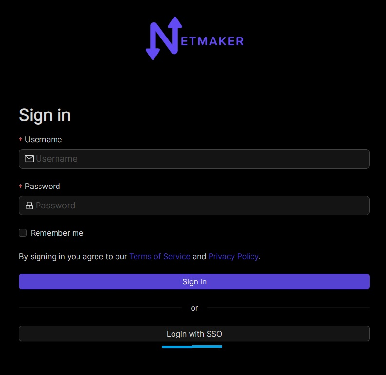

Integrating OAuth
Introduction
As of v0.14.5, Netmaker offers integration with the following OAuth providers:
GitHub
Google
Microsoft Azure AD
Open ID Connect (OIDC)
By integrating with an OAuth provider, your Netmaker users can log in via the provider, rather than the default simple auth.
Configuring your provider
In order to use OAuth, configure your OAuth provider (GitHub, Google, Azure AD).
You must configure your provider (except for Azure AD) to use the Netmaker Dashboard URI: dashboard.<netmaker.base.domain> as the origin URL.
For example: https://dashboard.netmaker.mydomain.com
You must configure your provider to use the Netmaker API URI redirect route with the following format: api.<netmaker base domain>/api/oauth/callback
For example: https://api.netmaker.mydomain.com/api/oauth/callback
General provider instructions can be found with the following links:
Instructions for GitHub: https://oauth2-proxy.github.io/oauth2-proxy/docs/configuration/oauth_provider/#github-auth-provider Instructions for Google: https://oauth2-proxy.github.io/oauth2-proxy/docs/configuration/oauth_provider/#google-auth-provider Instructions for Microsoft Azure AD: https://oauth2-proxy.github.io/oauth2-proxy/docs/configuration/oauth_provider/#microsoft-azure-ad-provider Instructions for OIDC: https://oauth2-proxy.github.io/oauth2-proxy/docs/configuration/oauth_provider/#openid-connect-provider
Configuring Netmaker
After you have configured your OAuth provider, take note of the CLIENT_ID and CLIENT_SECRET. If you are using Azure for oauth, you may also want to note down the Azure tenant ID you wish to use.
Next, Configure Netmaker with the following environment variables. If any are left blank, OAuth will fail.
AUTH_PROVIDER: "<azure-ad|github|google|oidc>"
CLIENT_ID: "<client id of your oauth provider>"
CLIENT_SECRET: "<client secret of your oauth provider>"
SERVER_HTTP_HOST: "api.<netmaker base domain>"
FRONTEND_URL: "https://dashboard.<netmaker base domain>"
AZURE_TENANT: "<only for azure, you may optionally specify the tenant for the OAuth>"
OIDC_ISSUER: "<only for oidc, your issuer endpoint for OIDC> ie. http://127.0.0.1:5556/dex"
After restarting your server, the Netmaker logs will indicate if the OAuth provider was successfully initialized:
sudo docker logs netmaker
Once successful, users can click on the “Login with SSO” button in the login page to sign-in with your configured OAuth provider.
Oauth Users
Users are also allowed to join a Netmaker server via OAuth. They can do this by clicking the “Login with SSO” button on the dashboard’s login page.

From v0.23.1, new accounts would be added to a pending list and would require approval from an admin before they can access any resource. This version also allows whitelisting of email domains for OAuth users. Server admins can do that by adding a comma-separated list of domains to the ALLOWED_EMAIL_DOMAINS environment variable. eg: ALLOWED_EMAIL_DOMAINS=example.net,example.com